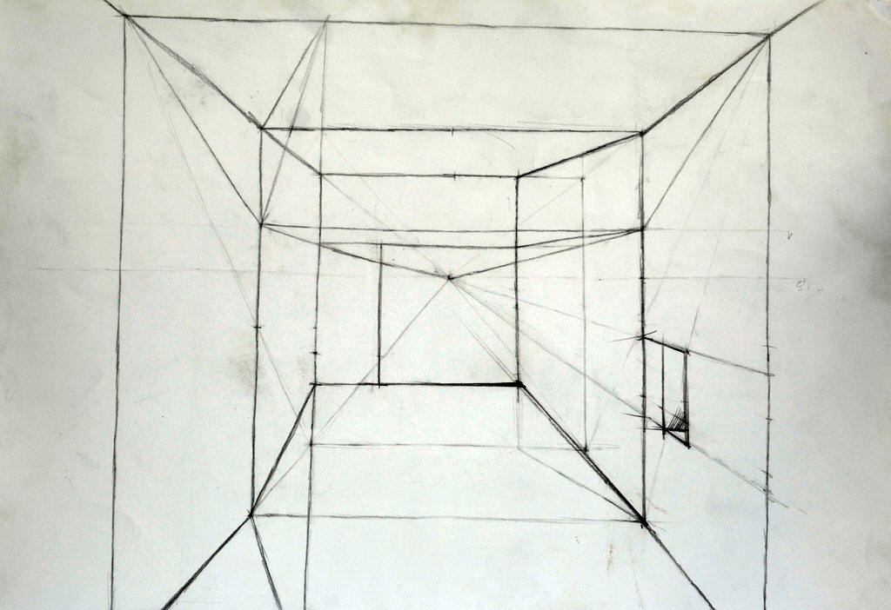

2.
képcsoport
Ebben a csoportban a térrekonstrukciós rajzokat gyűjtöttem össze, melynek célja
alaprajz és térmetszet alapján a tér felépítése volt.
Itt még nagyobb szükség volt a pontos térlátásra, a vizuális képzelőerőre.
Rajztanulásom során ez okozta a legnagyobb nehézséget, és ezt szerettem a
legkevésbé a feladatok közül.
Nehezen birkóztam meg ezekkel a feladatokkal, de már belátom, hogy nagyon fontos
részét képezte a folyamatnak. Azzal, hogy többféle rajztípust kipróbáltam,
szélesedett a látóköröm, és a térlátás fejlesztésének egy nagyon fontos
állomását jelentették ezek a rajzok.

